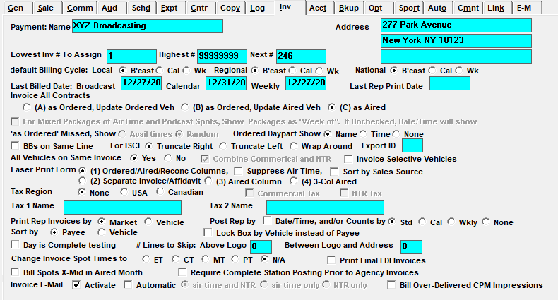

Invoice

Payment Name and Address: This is the Remit To address that appears on the invoice.
Default Billing Cycle Local, Regional and National: You can define a sales source as being Local, Regional, or National in the Sales Origin Field. This option will default the Billing Cycle that will appear in the Proposal and Orders Screens based on the salesperson’s setting. You can override the default on an order by order basis. You must have the Weekly and Calendar billing options checked to use this feature.
Lowest Invoice Number to Assign, Highest Number to Assign, Next Number to Assign: Determines the invoice number range. The Next # to Assign needs to be defined during the initial setup, and will then update automatically during invoicing.
Last Billed Date: Broadcast, Calendar, Weekly, Last Rep Print Date: These invoice dates need to be defined during the initial setup, and will then update automatically as needed during invoicing.
Invoice All Contracts: There are three methods of billing. Each method affects the invoices as well as the way in which receivables are updated. Once a method is selected, it cannot be changed. See Appendix A for complete descriptions of each method.
- “As Ordered, Update Ordered Vehicle”: All dollars ordered will be billed as ordered including missed and moved spots, with revenue going to the ordered vehicle.
- “As Ordered, Update Aired Vehicle”: All dollars ordered will be billed including missed and moved spots with revenue going to the aired vehicle.
- “As Aired”: Spots will be billed based on where they aired, and all revenue moves with the spots.
As Ordered Missed Show Avail Times or Random: When billing as ordered, this setting determines what is shown on the invoice for conventional line spots that were missed, made good, or set as outside.
- Avail Time: If the spot is a makegood or outside spot, it uses the makegood/outside date and time for the missed date and time. If the spot is missed, it generates a random date and time (same as the “random” option). This setting should only be used if all makegoods and outsides are only moved within the week it was originally missed in, and not to later or earlier weeks.
- Random: A random date and time will be generated during the invoice process, within the allowed days and times from the order.
Ordered Daypart Show Name, Time or None: This setting is used to define what ordered daypart information will be displayed on invoice form 1 for non-overridden dayparts. This affects both conventional lines and package lines, and prints under the ordered vehicle name. The options are:
- Name: Prints the daypart name.
- Time: Prints the daypart start and end times.
- None: Only the vehicle name is shown. The daypart name and daypart times are not shown.
BBs on Same Line: If checked on, a separate invoice line will be created for Open Billboards, the ordered spot, and Closing Billboards. This may create lengthy invoice runs.
For ISCI Truncate Right, Truncate Left, Wrap Around: These settings determine how lengthy ISCI codes are handled on the invoice. “Truncate right” will remove the last characters of the ISCI if it exceeds the column space. “Truncate left” will remove the first few characters of the ISCI if it exceeds the column space. “Wrap Around” will show the entire text across more than one line.
All Vehicles on Same Invoice: If set to Yes, this will print all vehicles on one invoice; if No, a separate invoice will print for every vehicle on a contract.
Combine Air and NTR: This will combine Air Time and NTR on one invoice. If using Installment Billing, this option is automatically activated. Note that if an invoice contains both air time and NTR, and electronic invoicing is used for the agency, that invoice will be excluded from the generated EDI file, as NTR is not compatible with electronic invoicing. (On version 8.1 and above, “Air” in “Combine Air and NTR” has been renamed “Commercial”.)
Invoice Selective Vehicles: When checked, each vehicle is listed in the Invoice Screen and can be selected and invoiced individually. This option can only be used if “All Vehicles on Same Invoice” is selected.
Laser Print Form (1) Ordered/Aired/Reconc Columns: Typically Invoice form 1 is used with “Sort by Sales Source” selected. This is the default and most commonly used form. It shows ordered information from the contract, reconciled aired information, and calculates the difference.
- If Suppress Air Time is selected, no spot air times will print.
- Sort by Sales Source: This applies to Form #1 only. If checked, the major invoice sort will be by Sales Source, with the invoice payee as a minor sort.
Laser Print Form (2) Separate Invoice/Affidavit: This form shows Totals for each Market. A separate Affidavit of Performance Report will show the detail spot information that can be provided to your client with the invoice. To enable this format, “Market Based” must be activated in Site Options->Sales.
Laser Print Form (3) Aired Column: This form only shows the aired spots and does not have an Ordered or Reconciled column on the invoice format.
Laser Print Form (4) 3-Col Aired: This format shows aired spots only and does not have an Ordered or Reconciled column. The aired spots show in three columns that will fit more airing spots per invoice than the other invoice formats. No Makegood or Outside spots, missed spots or line comments are shown. This form cannot combine NTR.
Tax Region None, USA, Canadian, Air Time Tax, NTR Tax: If applicable, select what country tax is used, whether the tax is for Air Time spots, NTR, or both, and define name for Tax 1 and Tax 2 (if used) for example: AZ, NM, HI. (Note: on version 8.1 and above, “Air Time Tax” is renamed “Commercial Tax”.)
Print Rep Invoices by Market or Vehicle: If using Rep vehicles, determine whether you wish to print Rep Invoices by Market (vehicle group) or by individual vehicles.
Post Rep by Date/Time, and/or Counts by Std, Cal, Wkly, or None: This determines how rep spots are posted.
- Post Rep by Date/Time and/or Counts: Allows you to post the exact dates and times each rep spot aired.
- Std: Standard broadcast calendar.
- Cal: Calendar month.
- Wkly: Weekly. When this option is selected, when posting rep counts by vehicle, a “Station Invoice Number” field is shown on the Post Log screen that can be used to enter a station invoice number, which will appear on the Barter Payment report and Barter Payment export.
- None.
Sort by Payee or Vehicle: Typically, invoices are sorted alphabetically by payee. If the Invoice Selective Vehicles option is activated, this question gives you the choice of sorting by vehicle instead of agency.
Lock Box by Vehicle Instead of Payee: This is used if your vehicles are stations and invoices are remitted to the stations, not corporate headquarters. When selected, each vehicle must have an address defined in Lists->Vehicles.
Day is Complete Testing: If checked, Monday through Sunday check boxes appear in Post Log. Each day must be checked as Complete for each vehicle prior to running invoices.
# Lines to Skip: Above Log and Between Logo and Address: A standard #10 window envelope can be used to mail out the invoices. These questions are used to adjust the number of spaces on the invoice form to fit into the window. The allowable numbers are between 0 and 5. Start with 0 before and 3 between logo and address, then adjust from there after testing a preliminary invoice to determine the correct values for your printer.
Change Invoice Spot Times to ET, CT, MT, PT or N/A: Typically N/A is selected. This is used if your programming is defined in a time zone different from what needs to appear on the invoices. This setting also affects the Proposal XML export (start and end time) and the Proposals/Contracts and Insertion Orders report.
Print Final EDI Invoices: When checked, by default, the “Include EDI” checkbox on the invoice screen will be checked on so that invoices for agencies that are set to use the EDI system will also get regular invoices created for them.
Bill Spots X-Mid in Aired Month: If checked and using EDI, then spots that cross midnight on the last day of the standard billing month will print on the invoice in the order month with a notation that they aired after midnight, but will actually bill in the next month where they truly aired. If unchecked then the spots will be shown and billed in the ordered month.
Require Complete Station Posting Prior to Agency Invoices: This setting is only for systems that have vehicles set to the "Post Log Import Source" of "Radio Station Invoice" on the Vehicle Options->Barter tab. If the "Require Complete Station Posting Prior to Agency Invoices" setting is checked on, then all radio station invoices must be posted (either by importing the PDF invoices or by manually posting them on the Post Log screen) before final invoices can be run from the Traffic system. If the "Require Complete Station Posting Prior to Agency Invoices" is not checked on, then final invoices can be generated before all the radio station invoices have been imported for the month. The default setting for this option is for it be unchecked. It should be left unchecked for all systems except in the case of systems that use the radio station invoice import feature and that do not wish to allow final invoices to be generated before all radio station invoices have been imported into the Traffic system.
Invoice Email: Activate and Automatic: These settings affect the PDF Invoice Email feature. When “Activate” is not checked, then PDF Invoice Emails will never be created or sent, regardless of what the "Automatic" checkbox is set to. When “Activate” is checked, the “Automatic” setting is used to determine what happens with the PDF invoices.
Automatic settings (note: these settings only take effect when “Activate” is checked on):
- When “Automatic” is not checked, the PDF invoice email files are created during the final invoice process for any agency or direct advertiser set to the PDF email setting in the EDI for Invoices field (on the agency and advertiser list screen). The PDF invoice emails must be manually emailed to the agencies/direct advertisers as needed, outside of the Traffic system. When generating reprint invoices, a prompt will appear that asks about the PDF invoice emails. When pressing Yes, the PDF invoice email files will be created. When pressing No, the PDF invoice email files will not be created.
- When “Automatic” is checked, PDF invoice emails will be created and emailed automatically, using the email addresses defined for each PDF email agency on the agency or advertiser (for direct advertisers) list screen. Which invoices are sent is determined by the “air time and NTR”, “air time only” and “NTR only” radio buttons. If “air time and NTR” is checked, then PDF invoice emails include air time and NTR invoices. If the Site Options setting “combine air time and NTR” is checked on, then the “air time and NTR” radio button is the only available radio button for this setting. If “combine air and NTR” is not checked on, meaning there are separate air time invoices and separate NTR invoices, even when there’s air time and NTR on a single contract, then the “air time only” and “NTR only” radio buttons will become available, to make it so that the PDF emails are only sent for air time invoices (not NTR), or only sent for NTR invoices (not air time). Additionally, when “automatic” is checked on, during the reprint invoice process, a prompt will appear that asks whether the PDF invoice emails should be emailed. When pressing Yes, the PDF invoice email files will be created and emailed to the recipients specified on the agency/direct advertiser screen. When pressing No on the prompt, the PDF invoice email files will not be created and will not be emailed.
Bill Over-Delivered CPM Impressions: This setting determines how the invoice program handles impressions over the impression goal for an ad server contract line (Version 8.1 and above only). When “Bill Over-Delivered CPM Impressions” is not checked on, only impressions up to the impression goal for a line will be invoiced. For example, if the impression goal was 50,000, and 60,000 were achieved, a maximum of 50,000 impressions would be invoiced. When “Bill Over-Delivered CPM Impressions” is checked on, then impressions that are achieved that are greater than the impression goal for the line will also be invoiced. For example, if the impression goal was 100,000, and 120,000 impressions were achieved, the full 120,000 impressions would be invoiced and the advertiser/agency would be charged for the 120,000 impressions.